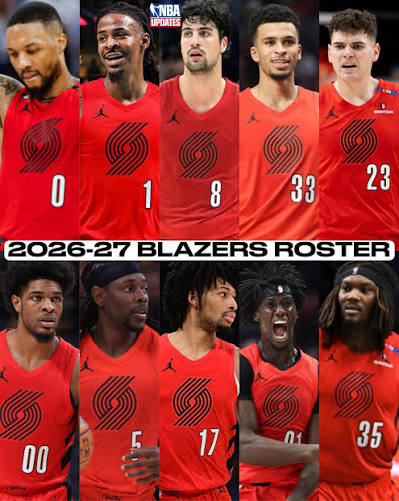

Hello Blazer basketball fans
All things Blazers
The Portland Trail Blazers started the 2026–27 season with a 5–0 record on the road, marking the franchise's best away start since the 1990–91 season—the same year they went on to make the NBA Finals.

The Portland Trail Blazers are a professional basketball team based in Portland, Oregon, competing in the NBA's Western Conference (Northwest Division). Founded as an expansion team in 1970, they are the only NBA franchise currently located in the Pacific Northwest.
Three high ranking stat categories
- Points Per Game: 3rd in the NBA (119.3 PPG) — Powered by elite early-season scoring performances from Deni Avdija (22.3 PPG) and Damian Lillard (19.4 PPG).
- True Shooting Percentage (TS%): 3rd in the NBA (60.2%) — Reflecting a massive early leap in overall shot-making and scoring efficiency.
- Three-Pointers Made & Attempted: 4th in 3PA (42.4) and 5th in 3PM (15.1) — The Blazers are using heavy perimeter volume to pace their high-scoring identity.
Built by YOUR NAME · BMIS 235